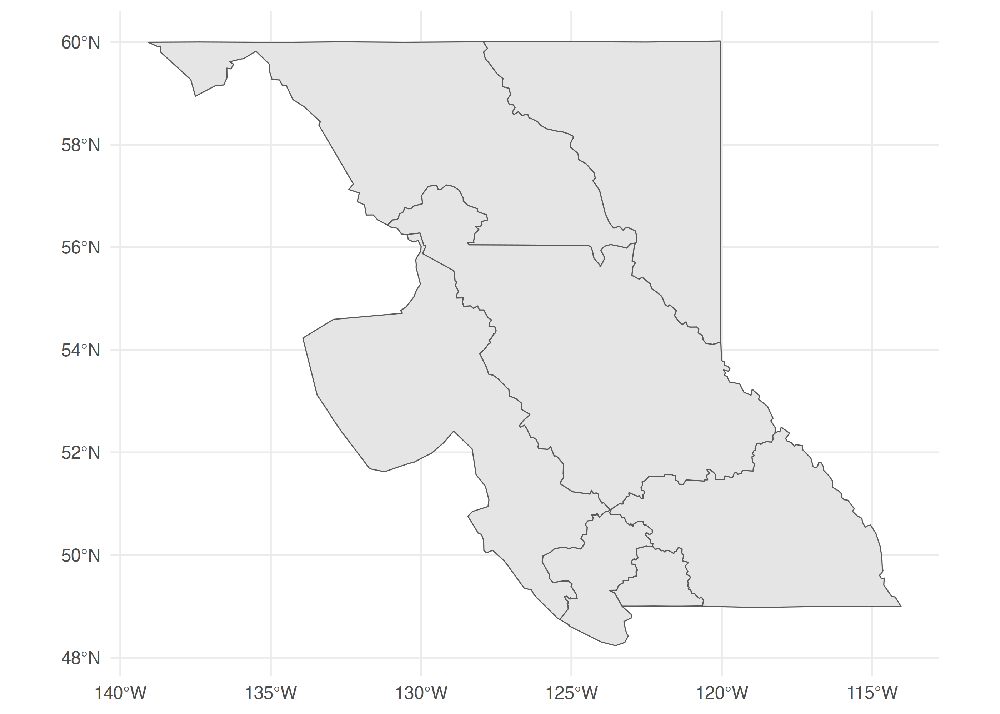
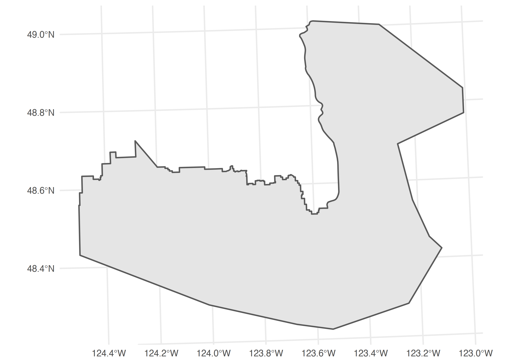

The bcdata R
package contains functions for searching & retrieving data from the
B.C. Data Catalogue.
The B.C. Data Catalogue is the place to find British Columbia Government data, applications and web services. Much of the data are released under the Open Government Licence — British Columbia, as well as numerous other licences.
You can install bcdata directly from CRAN:
install.packages("bcdata")
library(bcdata)
bcdc_browse()
bcdata::bcdc_browse() let’s you access the B.C. Data Catalogue web
interface directly from R—opening the catalogue search page in your
default browser:
## Take me to the B.C. Data Catalogue home page
bcdc_browse()If you know the catalogue “human-readable” record name or permanent ID you can open directly to the record web page:
## Take me to the B.C. Winery Locations catalogue record using the record name
bcdc_browse("bc-winery-locations")
## Take me to the B.C. Winery Locations catalogue record using the record permanent ID
bcdc_browse("1d21922b-ec4f-42e5-8f6b-bf320a286157")
bcdc_search()
bcdc_search() let’s you search records in the B.C. Data
Catalogue, returning the search results in your R session.
Let’s search the catalogue for records that contain the word “recycling”:
## Give me the catalogue search results for 'recycling'
bcdc_search("recycling")
#> List of B.C. Data Catalogue Records
#> Number of records: 4
#> Titles:
#> 1: Tire Stewardship BC Tire Recycling Data (csv)
#> ID: f791329b-c2dc-4f82-9993-209780f2a1c6
#> Name: tire-stewardship-bc-tire-recycling-data
#> 2: BC FIRST Tire Recycling Data 1991-2006 (csv)
#> ID: a29ad492-29a2-44b9-8693-d27a8cc8e686
#> Name: bc-first-tire-recycling-data-1991-2006
#> 3: Environmental Protection Information Resources e-Library (other)
#> ID: dae0f2c3-b4f4-4d16-a96d-d7fe7c1581f3
#> Name: environmental-protection-information-resources-e-library
#> 4: Cross-linked Information Resources (CLIR) (other)
#> ID: 6f8576bc-1585-429c-97f9-e94b059fa455
#> Name: cross-linked-information-resources-clir
#>
#> Access a single record by calling `bcdc_get_record(ID)` with the ID from the desired
#> record.You can set the number of records to be returned from the search
and/or you can customize your search using the catalogue search
facets license_id, download_audience,
res_format, sector, organization,
and groups:
## Give me the first catalogue search result for 'recycling'
bcdc_search("recycling", n = 1)
#> List of B.C. Data Catalogue Records
#> Number of records: 1
#> Titles:
#> 1: Tire Stewardship BC Tire Recycling Data (csv)
#> ID: f791329b-c2dc-4f82-9993-209780f2a1c6
#> Name: tire-stewardship-bc-tire-recycling-data
#>
#> Access a single record by calling `bcdc_get_record(ID)` with the ID from the desired
#> record.
## Give me the catalogue search results for 'recycling' where the
## data is licenced under Open Government Licence – British Columbia
bcdc_search("recycling", license_id = "2")
#> List of B.C. Data Catalogue Records
#> Number of records: 1
#> Titles:
#> 1: BC FIRST Tire Recycling Data 1991-2006 (csv)
#> ID: a29ad492-29a2-44b9-8693-d27a8cc8e686
#> Name: bc-first-tire-recycling-data-1991-2006
#>
#> Access a single record by calling `bcdc_get_record(ID)` with the ID from the desired
#> record.You can see all valid values for the catalogue search facets using
bcdata::bcdc_search_facets():
## Valid values for search facet 'license_id'
bcdc_search_facets(facet = "license_id")
#> facet count display_name name
#> 1 license_id 92 Statistics Canada Open Licence 21
#> 2 license_id 12 Open Government Licence – TransLink 48
#> 3 license_id 13 Open Government Licence – Municipality of North Cowichan 44
#> 4 license_id 5 Open Government Licence – Industry Training Authority 50
#> 5 license_id 3 Open Government Licence - Destination BC 43
#> 6 license_id 61 Open Government Licence - Canada 24
#> 7 license_id 1837 Open Government Licence - British Columbia 2
#> 8 license_id 2 Open Government Licence - BC Assessment 47
#> 9 license_id 5 Open Data Licence for ICBC Information 49
#> 10 license_id 2 Open Data Commons - Public Domain Dedication and Licence 45
#> 11 license_id 1 King's Printer Licence - British Columbia 25
#> 12 license_id 15 Elections BC Open Data Licence 42
#> 13 license_id 1710 Access Only 22Finally, you can retrieve the metadata for a single
catalogue record by using the record name or permanent ID with
bcdc_get_record(). It is advised to use the permanent ID
rather than the human-readable name in non-interactive situations—like
scripts—to guard against future name changes of a record:
## Give me the catalogue record metadata for `bc-first-tire-recycling-data-1991-2006`
bcdc_get_record("a29ad492-29a2-44b9-8693-d27a8cc8e686")
#> B.C. Data Catalogue Record: BC FIRST Tire Recycling Data 1991-2006
#> Name: bc-first-tire-recycling-data-1991-2006 (ID: a29ad492-29a2-44b9-8693-d27a8cc8e686)
#> Permalink: https://catalogue.data.gov.bc.ca/dataset/a29ad492-29a2-44b9-8693-d27a8cc8e686
#> Licence: Open Government Licence - British Columbia
#> Description: Financial Incentives for Recycling Scrap Tires (FIRST) collection and
#> recycling data (tonnes) from 1991 to 2006. In 2007 [Tire Stewardship
#> BC](http://www.tsbc.ca/), a not for profit society, launched the new scrap tire
#> recycling program replacing the government-run program that had been in place since
#> 1991. Tire Stewardship BC collection and recycling data is available
#> [here](https://catalogue.data.gov.bc.ca/dataset/f791329b-c2dc-4f82-9993-209780f2a1c6).
#> Available Resources (1):
#> 1. BC FIRST Tire Recycling Data 1991-2006 (csv)
#> Access the full 'Resources' data frame using:
#> bcdc_tidy_resources('a29ad492-29a2-44b9-8693-d27a8cc8e686')
bcdc_get_data()
Once you have located the B.C. Data Catalogue record with the data
you want, you can use bcdata::bcdc_get_data() to download
and read the data from the record. You can use the record name,
permanent ID or the result from bcdc_get_record(). Let’s
look at the B.C. Highway Web Cameras data:
## Get the data resource for the `bc-highway-cams` catalogue record
bcdc_get_data("bc-highway-cams")
#> # A tibble: 999 × 19
#> links_bchi…¹ links…² links…³ links…⁴ id highw…⁵ highw…⁶ camName caption credit orien…⁷ latit…⁸
#> <chr> <chr> <chr> <chr> <dbl> <chr> <chr> <chr> <chr> <chr> <chr> <dbl>
#> 1 http://imag… http:/… http:/… http:/… 2 5 Coquih… Coquih… Hwy 5,… <NA> N 49.6
#> 2 http://imag… http:/… http:/… http:/… 5 3 <NA> Kooten… Hwy 3,… <NA> E 49.1
#> 3 http://imag… http:/… http:/… http:/… 6 16 <NA> Smithe… Hwy 16… <NA> N 54.8
#> 4 http://imag… http:/… http:/… http:/… 7 1 Fraser… Cole R… Hwy 1 … <NA> E 49.1
#> 5 http://imag… http:/… http:/… http:/… 8 1 Vancou… Malaha… Hwy 1 … <NA> N 48.6
#> 6 http://imag… http:/… http:/… http:/… 9 19 <NA> Nanaim… Hwy 19… <NA> N 49.2
#> 7 http://imag… http:/… http:/… http:/… 10 97 Northe… South … Hwy 97… <NA> N 56.1
#> 8 http://imag… http:/… http:/… http:/… 11 1 Trans … Revels… Hwy 1 … <NA> NE 51.0
#> 9 http://imag… http:/… http:/… http:/… 12 1 Trans … Three … Hwy 1,… <NA> E 50.9
#> 10 http://imag… http:/… http:/… http:/… 13 99 Peace … Peace … Hwy 99… <NA> N 49.0
#> # … with 989 more rows, 7 more variables: longitude <dbl>, imageStats_updatePeriodMean <dttm>,
#> # imageStats_updatePeriodStdDev <dbl>, markedDelayed <dbl>, updatePeriodMean <dbl>,
#> # updatePeriodStdDev <dbl>, fetchMean <dbl>, and abbreviated variable names ¹links_bchighwaycam,
#> # ²links_imageDisplay, ³links_imageThumbnail, ⁴links_replayTheDay, ⁵highway_number,
#> # ⁶highway_locationDescription, ⁷orientation, ⁸latitude
## OR use the permanent ID, which is better for scripts or non-interactive use
bcdc_get_data("6b39a910-6c77-476f-ac96-7b4f18849b1c")
#> # A tibble: 999 × 19
#> links_bchi…¹ links…² links…³ links…⁴ id highw…⁵ highw…⁶ camName caption credit orien…⁷ latit…⁸
#> <chr> <chr> <chr> <chr> <dbl> <chr> <chr> <chr> <chr> <chr> <chr> <dbl>
#> 1 http://imag… http:/… http:/… http:/… 2 5 Coquih… Coquih… Hwy 5,… <NA> N 49.6
#> 2 http://imag… http:/… http:/… http:/… 5 3 <NA> Kooten… Hwy 3,… <NA> E 49.1
#> 3 http://imag… http:/… http:/… http:/… 6 16 <NA> Smithe… Hwy 16… <NA> N 54.8
#> 4 http://imag… http:/… http:/… http:/… 7 1 Fraser… Cole R… Hwy 1 … <NA> E 49.1
#> 5 http://imag… http:/… http:/… http:/… 8 1 Vancou… Malaha… Hwy 1 … <NA> N 48.6
#> 6 http://imag… http:/… http:/… http:/… 9 19 <NA> Nanaim… Hwy 19… <NA> N 49.2
#> 7 http://imag… http:/… http:/… http:/… 10 97 Northe… South … Hwy 97… <NA> N 56.1
#> 8 http://imag… http:/… http:/… http:/… 11 1 Trans … Revels… Hwy 1 … <NA> NE 51.0
#> 9 http://imag… http:/… http:/… http:/… 12 1 Trans … Three … Hwy 1,… <NA> E 50.9
#> 10 http://imag… http:/… http:/… http:/… 13 99 Peace … Peace … Hwy 99… <NA> N 49.0
#> # … with 989 more rows, 7 more variables: longitude <dbl>, imageStats_updatePeriodMean <dttm>,
#> # imageStats_updatePeriodStdDev <dbl>, markedDelayed <dbl>, updatePeriodMean <dbl>,
#> # updatePeriodStdDev <dbl>, fetchMean <dbl>, and abbreviated variable names ¹links_bchighwaycam,
#> # ²links_imageDisplay, ³links_imageThumbnail, ⁴links_replayTheDay, ⁵highway_number,
#> # ⁶highway_locationDescription, ⁷orientation, ⁸latitude
## OR use the result from bcdc_get_record()
my_record <- bcdc_get_record("6b39a910-6c77-476f-ac96-7b4f18849b1c")
bcdc_get_data(my_record)
#> # A tibble: 999 × 19
#> links_bchi…¹ links…² links…³ links…⁴ id highw…⁵ highw…⁶ camName caption credit orien…⁷ latit…⁸
#> <chr> <chr> <chr> <chr> <dbl> <chr> <chr> <chr> <chr> <chr> <chr> <dbl>
#> 1 http://imag… http:/… http:/… http:/… 2 5 Coquih… Coquih… Hwy 5,… <NA> N 49.6
#> 2 http://imag… http:/… http:/… http:/… 5 3 <NA> Kooten… Hwy 3,… <NA> E 49.1
#> 3 http://imag… http:/… http:/… http:/… 6 16 <NA> Smithe… Hwy 16… <NA> N 54.8
#> 4 http://imag… http:/… http:/… http:/… 7 1 Fraser… Cole R… Hwy 1 … <NA> E 49.1
#> 5 http://imag… http:/… http:/… http:/… 8 1 Vancou… Malaha… Hwy 1 … <NA> N 48.6
#> 6 http://imag… http:/… http:/… http:/… 9 19 <NA> Nanaim… Hwy 19… <NA> N 49.2
#> 7 http://imag… http:/… http:/… http:/… 10 97 Northe… South … Hwy 97… <NA> N 56.1
#> 8 http://imag… http:/… http:/… http:/… 11 1 Trans … Revels… Hwy 1 … <NA> NE 51.0
#> 9 http://imag… http:/… http:/… http:/… 12 1 Trans … Three … Hwy 1,… <NA> E 50.9
#> 10 http://imag… http:/… http:/… http:/… 13 99 Peace … Peace … Hwy 99… <NA> N 49.0
#> # … with 989 more rows, 7 more variables: longitude <dbl>, imageStats_updatePeriodMean <dttm>,
#> # imageStats_updatePeriodStdDev <dbl>, markedDelayed <dbl>, updatePeriodMean <dbl>,
#> # updatePeriodStdDev <dbl>, fetchMean <dbl>, and abbreviated variable names ¹links_bchighwaycam,
#> # ²links_imageDisplay, ³links_imageThumbnail, ⁴links_replayTheDay, ⁵highway_number,
#> # ⁶highway_locationDescription, ⁷orientation, ⁸latitudeA catalogue record can have one or multiple data files—or
“resources”. If there is only one resource, bcdc_get_data()
will return that resource by default, as in the above
bc-highway-cams example. If there are multiple data
resources you will need to specify which resource you want. Let’s look
at a catalogue record that contains multiple data resources—BC Schools -
Programs Offered in Schools:
## Get the record ID for the `bc-schools-programs-offered-in-schools` catalogue record
bcdc_search("school programs", n = 1)
#> List of B.C. Data Catalogue Records
#> Number of records: 1
#> Titles:
#> 1: BC Schools - Programs Offered in Schools (txt, xlsx)
#> ID: b1f27d1c-244a-410e-a361-931fac62a524
#> Name: bc-schools-programs-offered-in-schools
#>
#> Access a single record by calling `bcdc_get_record(ID)` with the ID from the desired
#> record.
## Get the metadata for the `bc-schools-programs-offered-in-schools` catalogue record
bcdc_get_record("b1f27d1c-244a-410e-a361-931fac62a524")
#> B.C. Data Catalogue Record: BC Schools - Programs Offered in Schools
#> Name: bc-schools-programs-offered-in-schools (ID: b1f27d1c-244a-410e-a361-931fac62a524)
#> Permalink: https://catalogue.data.gov.bc.ca/dataset/b1f27d1c-244a-410e-a361-931fac62a524
#> Licence: Open Government Licence - British Columbia
#> Description: BC Schools English Language Learners, French Immersion, Francophone, Career
#> Preparation, Aboriginal Support Services, Aboriginal Language and Culture, Continuing
#> Education and Career Technical Programs offered in BC schools up to 2013/2014.
#> Available Resources (2):
#> 1. ProgramsOfferedinSchools.txt (txt)
#> 2. ProgramsOfferedinSchools.xlsx (xlsx)
#> Access the full 'Resources' data frame using:
#> bcdc_tidy_resources('b1f27d1c-244a-410e-a361-931fac62a524')We see there are two data files or resources available in this
record, so we need to tell bcdc_get_data() which one we
want. When used interactively, bcdc_get_data() will prompt
you with the list of available resources through bcdata and
ask you to select the resource you want. The resource ID for each data
set is available in the metadata record ☝️:
## Get the txt data resource from the `bc-schools-programs-offered-in-schools`
## catalogue record
bcdc_get_data("b1f27d1c-244a-410e-a361-931fac62a524", resource = 'a393f8cf-51ec-42c6-8449-4cea4c75385c')
#> # A tibble: 16,152 × 24
#> Data Le…¹ Schoo…² Facil…³ Publi…⁴ Distr…⁵ Distr…⁶ Schoo…⁷ Schoo…⁸ Has E…⁹ Has C…˟ Has E…˟ Has L…˟
#> <chr> <chr> <chr> <chr> <chr> <chr> <chr> <chr> <lgl> <lgl> <lgl> <lgl>
#> 1 SCHOOL L… 2005/2… STANDA… BC Pub… 005 Southe… 005010… Sparwo… NA TRUE NA NA
#> 2 SCHOOL L… 2006/2… STANDA… BC Pub… 005 Southe… 005010… Sparwo… NA TRUE NA NA
#> 3 SCHOOL L… 2007/2… STANDA… BC Pub… 005 Southe… 005010… Sparwo… NA TRUE NA NA
#> 4 SCHOOL L… 2005/2… STANDA… BC Pub… 005 Southe… 005010… Jaffra… NA TRUE NA NA
#> 5 SCHOOL L… 2006/2… STANDA… BC Pub… 005 Southe… 005010… Jaffra… NA TRUE NA NA
#> 6 SCHOOL L… 2007/2… STANDA… BC Pub… 005 Southe… 005010… Jaffra… NA TRUE NA NA
#> 7 SCHOOL L… 2008/2… STANDA… BC Pub… 005 Southe… 005010… Jaffra… NA TRUE NA NA
#> 8 SCHOOL L… 2009/2… STANDA… BC Pub… 005 Southe… 005010… Jaffra… NA TRUE NA NA
#> 9 SCHOOL L… 2010/2… STANDA… BC Pub… 005 Southe… 005010… Jaffra… NA TRUE NA NA
#> 10 SCHOOL L… 2011/2… STANDA… BC Pub… 005 Southe… 005010… Jaffra… NA TRUE NA NA
#> # … with 16,142 more rows, 12 more variables: `Has Prog Francophone` <lgl>,
#> # `Has Any French Immersion Prog` <lgl>, `Has Any French Prog` <lgl>,
#> # `Has Aborig Supp Services` <lgl>, `Has Other Appr Aborig Prog` <lgl>,
#> # `Has Aborig Lang And Cult` <lgl>, `Has Continuing Ed Prog` <lgl>,
#> # `Has Distributed Learn Prog` <lgl>, `Has Career Prep Prog` <lgl>, `Has Coop Prog` <lgl>,
#> # `Has Apprenticeship Prog` <lgl>, `Has Career Technical Prog` <lgl>, and abbreviated variable
#> # names ¹`Data Level`, ²`School Year`, ³`Facility Type`, ⁴`Public Or Independent`, …Alternatively, you can retrieve the full details of the available
resources for a given record as a data frame using
bcdc_tidy_resources():
## Get a data frame of data resources for the `bc-schools-programs-offered-in-schools`
## catalogue record
bcdc_tidy_resources("b1f27d1c-244a-410e-a361-931fac62a524")
#> # A tibble: 2 × 9
#> name url id format ext packa…¹ locat…² wfs_a…³ bcdat…⁴
#> <chr> <chr> <chr> <chr> <chr> <chr> <chr> <lgl> <lgl>
#> 1 ProgramsOfferedinSchools.txt http://www.bced.… a393… txt txt b1f27d… catalo… FALSE TRUE
#> 2 ProgramsOfferedinSchools.xlsx http://www.bced.… 1e34… xlsx xlsx b1f27d… catalo… FALSE TRUE
#> # … with abbreviated variable names ¹package_id, ²location, ³wfs_available, ⁴bcdata_availablebcdc_get_data() will also detect if the data resource is
a geospatial file, and automatically reads and returns it as an sf object in
your R session.
Let’s get the air zones for British Columbia:
## Find the B.C. Air Zones catalogue record
bcdc_search("air zones", res_format = "geojson")
#> List of B.C. Data Catalogue Records
#> Number of records: 1
#> Titles:
#> 1: British Columbia Air Zones (shp, kml, geojson)
#> ID: e8eeefc4-2826-47bc-8430-85703d328516
#> Name: british-columbia-air-zones
#>
#> Access a single record by calling `bcdc_get_record(ID)` with the ID from the desired
#> record.
## Get the metadata for the B.C. Air Zones catalogue record
bc_az_metadata <- bcdc_get_record("e8eeefc4-2826-47bc-8430-85703d328516")
## Get the B.C. Air Zone geospatial data
bc_az <- bcdc_get_data(bc_az_metadata, resource = "c495d082-b586-4df0-9e06-bd6b66a8acd9")
## Plot the B.C. Air Zone geospatial data with ggplot()
bc_az %>%
ggplot() +
geom_sf() +
theme_minimal()
Note: The bcdata package supports
downloading most file types, including zip archives. It will do
its best to identify and read data from zip files, however if there are
multiple data files in the zip, or data files that bcdata
doesn’t know how to import, it will fail.
bcdc_query_geodata()
Many geospatial data sets in the B.C. Data Catalogue are available
through a Web Feature
Service. While bcdc_get_data() will retrieve the
geospatial data for you, sometimes the geospatial file is very large—and
slow to download—and/or you may only want some of the data.
bcdc_query_geodata() let’s you query catalogue geospatial
data available as a Web Feature Service using select and
filter functions (just like in dplyr. The
bcdc::collect() function returns the
bcdc_query_geodata() query results as an sf object in
your R session.
Let’s get the Capital Regional District boundary from the B.C. Regional Districts geospatial data—the whole file takes 30-60 seconds to download and I only need the one polygon, so why not save some time:
## Find the B.C. Regional Districts catalogue record
bcdc_search("regional districts administrative areas", res_format = "wms", n = 1)
#> List of B.C. Data Catalogue Records
#> Number of records: 1
#> Titles:
#> 1: Regional Districts - Legally Defined Administrative Areas of BC (multiple, xlsx, wms,
#> kml)
#> ID: d1aff64e-dbfe-45a6-af97-582b7f6418b9
#> Name: regional-districts-legally-defined-administrative-areas-of-bc
#>
#> Access a single record by calling `bcdc_get_record(ID)` with the ID from the desired
#> record.
## Get the metadata for the B.C. Regional Districts catalogue record
bc_regional_districts_metadata <- bcdc_get_record("d1aff64e-dbfe-45a6-af97-582b7f6418b9")
## We can see in the search results, and in the metadata record, that this record has a `"wms"`
## resource format, indicating that it is available as a Web Feature Service and thus
## we can query it using `bcdc_query_geodata()`
## Have a quick look at the geospatial columns to help with filter or select
bcdc_describe_feature(bc_regional_districts_metadata)
#> # A tibble: 21 × 5
#> col_name sticky remote_col_type local_col_type column_comments
#> <chr> <lgl> <chr> <chr> <chr>
#> 1 id TRUE xsd:string character <NA>
#> 2 LGL_ADMIN_AREA_ID TRUE xsd:decimal numeric "An operationally-generated uniqu…
#> 3 ADMIN_AREA_NAME FALSE xsd:string character "The authoritative, officially ap…
#> 4 ADMIN_AREA_ABBREVIATION FALSE xsd:string character "A short form or commonly-known a…
#> 5 ADMIN_AREA_BOUNDARY_TYPE FALSE xsd:string character "BOUNDARY TYPE is a high-level gr…
#> 6 ADMIN_AREA_GROUP_NAME FALSE xsd:string character "The name given to the larger adm…
#> 7 CHANGE_REQUESTED_ORG FALSE xsd:string character "The government acronym of the Mi…
#> 8 UPDATE_TYPE FALSE xsd:string character "A short description of the lates…
#> 9 WHEN_UPDATED FALSE xsd:date date "The date and time the record was…
#> 10 MAP_STATUS FALSE xsd:string character "That the digital map has been ap…
#> # … with 11 more rows
## Get the Capital Regional District polygon from the B.C. Regional
## Districts geospatial data
my_regional_district <- bcdc_query_geodata(bc_regional_districts_metadata) %>%
filter(ADMIN_AREA_NAME == "Capital Regional District") %>%
collect()
## Plot the Capital Regional District polygon with ggplot()
my_regional_district %>%
ggplot() +
geom_sf() +
theme_minimal()
The vignette Querying
Spatial Data with bcdata provides a full demonstration on how to use
bcdata::bcdc_query_geodata() to fine tune a Web
Feature Service request for geospatial data from the B.C. Data
Catalogue.